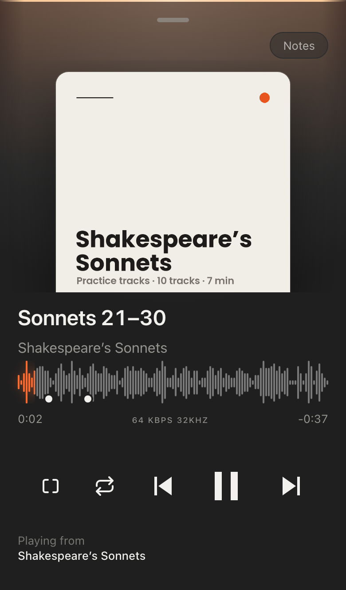

Callboard
Your tracks, in every pocket.
A music player for your own WordPress site. Send one link.

The player
Keeps playing in a pocket.
Screen off, phone away, track still going.

- Lock screenPlay and skip without unlocking.
- AirPlaySend it to the speaker in the room.
- OfflineSave once. No signal needed.
Now Playing
Big enough to hit without looking.
Tap the bar and the track fills the screen. Drag it down to go back.

Sharing
Hand it to someone.
Send the link. No signal? Pass the set file phone to phone.

Make it yours
Your name. Your colour.
Pick one and watch the phone change.

Start the live demo
A real WordPress site, running in your browser. Nothing to install.
Tech specs
Built on the web.
One WordPress plugin. No app store, no framework, no build step.
Requires WordPress 6.5 and PHP 8.1 or later.